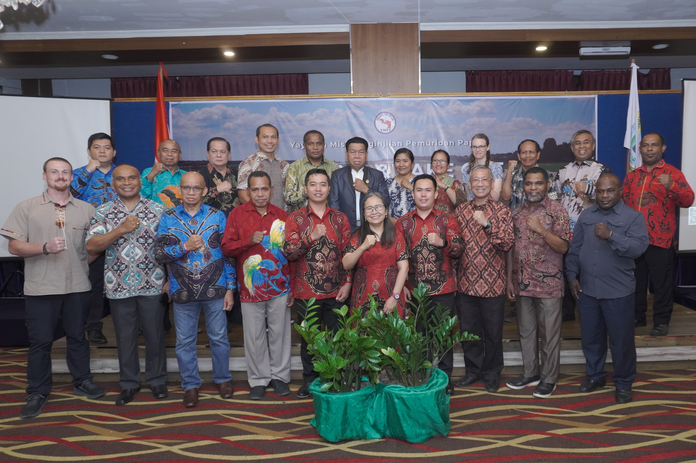

Dengan Hikmat Allah Kita Menjangkau Komunitas
YMP3 hadir untuk melayani masyarakat Papua melalui penerjemahan Alkitab, pendidikan, dan pelayanan komunitas.
Mengenal Lebih DekatVisi
Supaya setiap komunitas (suku-suku bangsa) dimenangkan bagi Kristus dan mengalami transformasi hidup agar bisa dipakai untuk memenangkan komunitas lainnya di Indonesia melalui pemuridan dalam kebenaran Firman Tuhan
Misi
Penginjilan dan pemuridan melalui Penerjemahan Alkitab dalam bahasa yang paling dimengerti.
YMP3: Pelayanan untuk Papua
Dimulai dengan kerinduan untuk menjangkau komunitas yang terpencil. Beberapa orang kemudian mulai berdoa di tahun 2001. Pada tahun 2002 terbentuklah Yayasan Misi Penginjilan Pemuridan (YMP3). YMP3 mulai dengan Pemberantasan Buta Huruf dan Kelompok Belajar Alkitab secara kronologi di SP11, Manokwari, Papua Barat. Tahun 2007, YMP3 memulai sponsor Tenaga Kerja Asing (TKA) sebagai rohaniawan untuk menjangkau komunitas terpencil lewat Penerjemahan Alkitab. Sejak tahun 2019, melalui pengembangan organisasi, YMP3 mulai menginisiasi program penerjemahan sendiri dengan merekrut orang-orang Indonesia. Di Tahun 2024, YMP3 bersama dengan gereja dan masyarakat setempat, serta mitra lainnya telah menghasilkan beberapa cerita Alkitab secara lisan dengan dengan metode One-Story. Saat ini, dalam bidang Penerjemahan Alkitab, YMP3 sedang mengerjakan satu bahasa untuk dihadirkan secara tertulis dan mempersiapkan program bahasa baru di Sorong Selatan, Papua Barat Daya dan Sarmi, Papua untuk dikerjakan di tahun 2026 dengan metode yang baru. Dalam bidang pendidikan, tahun 2025 YMP3 telah membawahi satu lagi sekolah PAUD Lentera Kasih. YMP3 semakin berkembang dan mendukung lebih banyak Tenaga Kerja Asing (TKA) sebagai rohaniawan yang tersebar di Indonesia dengan bidang pelayanan yang beragam pula. YMP3 juga berkembang secara relasi – bermitra dengan berbagai pihak, baik individu maupun organisasi.



Jangkauan Pelayanan Kami
.png)
Bertekun dalam Pelayanan
Kami percaya bahwa setiap pelayanan yang kami lakukan adalah bagian dari panggilan Allah untuk membawa terang-Nya bagi semua bangsa.
Kasih
Rendah Hati
Integritas
Kemitraan
Penerjemahan Alkitab
Perubahan Hidup
Pengembangan Kapasitas

Kegiatan Lokakarya Gugus Sadengsapa
Bersama, Kita Melihat Perubahan
Melalui pelayanan YMP3, kami terus berupaya mendukung komunitas bahasa melalui penerjemahan Alkitab, pendidikan, dan pelayanan pemuridan.
25+
Tahun Pelayanan
2 TK & 1 PAUD
Lembaga Pendidikan
50+
Wilayah Pelayanan